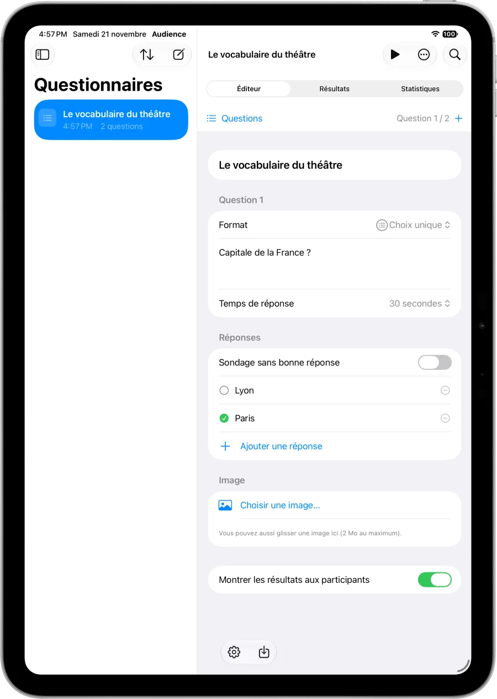
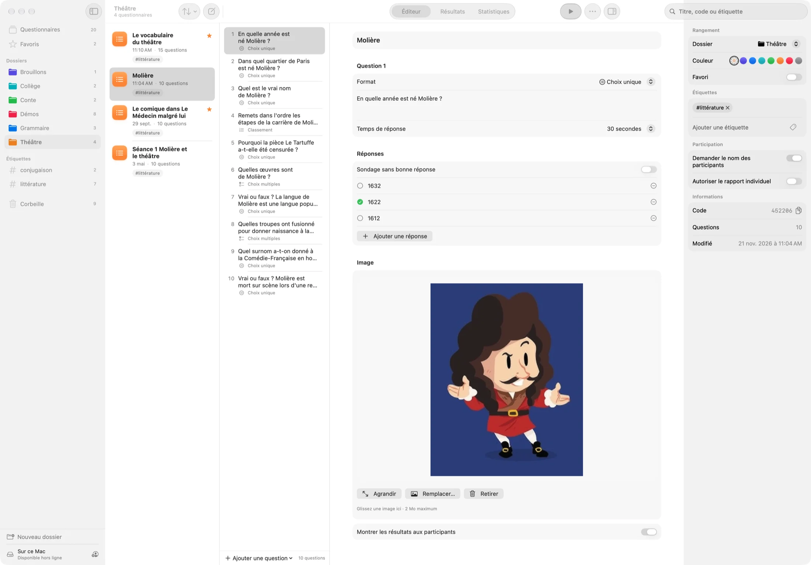

Audience pour Mac
Fenêtres, raccourcis clavier, glisser-déposer et synthèse des résultats par une IA locale.
Télécharger
Audience pour Mac et iPad
Préparez vos questionnaires, projetez-les en plein écran et voyez les réponses de la salle arriver en temps réel. Deux vraies applications, rapides, élégantes et utilisables hors ligne.
Gratuit et libre · macOS 26 et iPadOS 26 ou ultérieur


Deux apps, une bibliothèque
Connectez votre compte Audience : questionnaires, dossiers et étiquettes vous suivent d’un appareil à l’autre, et sur le site.
Fenêtres, raccourcis clavier, glisser-déposer et synthèse des résultats par une IA locale.
TéléchargerTout le tactile : préparez en portrait ou en paysage, présentez en plein écran, pilotez le direct du bout des doigts.
Bientôt disponiblePréparer
Dossiers colorés, étiquettes, favoris et recherche instantanée : retrouvez n’importe quel questionnaire par son titre, son code ou son étiquette. Glissez, déposez, c’est rangé.

Présenter
Lancez le direct : un QR code s’affiche en grand, les téléphones patientent, puis tout le monde commence en même temps. Au clavier sur Mac, au doigt sur iPad, qui reste éveillé jusqu’à la fin.


Analyser
Taux de réussite, réponses les plus fréquentes, export CSV. Et, sur Mac, une synthèse rédigée par une IA qui tourne sur votre ordinateur.
Avec Ollama, Audience résume les résultats, repère les difficultés et propose des pistes de reprise. Sans clé API, sans envoi des noms des participants, et hors ligne une fois le modèle installé.
Réponses justes et fausses, taux de réussite et réponses fréquentes, question par question.
Mac, iPad et navigateur partagent la même bibliothèque grâce à votre compte.
Ouvrez un fichier Markdown, une archive du site ou collez simplement le texte d’un questionnaire.
SwiftUI, Liquid Glass, plein écran, mode sombre. Sans Electron ni navigateur caché.
Gratuite, libre et sans publicité. Le code source est ouvert à tous.
Mac : macOS 26 ou ultérieur, application universelle signée et notarisée par Apple.
Décompressez l’archive, puis glissez Audience dans le dossier Applications.
iPad : iPadOS 26 ou ultérieur, bientôt disponible.